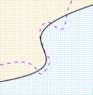

5.1.5 Cross-Validation on Classification Problems
5.1.5 분류 문제에서의 교차 검증
In this chapter so far, we have illustrated the use of cross-validation in the regression setting where the outcome $Y$ is quantitative, and so have used MSE to quantify test error. But cross-validation can also be a very useful approach in the classification setting when $Y$ is qualitative. In this setting, cross-validation works just as described earlier in this chapter, except that rather than using MSE to quantify test error, we instead use the number of misclassified observations. For instance, in the classification setting, the LOOCV error rate takes the form 본 장에서 지금까지, 우리는 결과물 $Y$ 가 정량적인(quantitative) 회귀의 맥락 안에서 어떻게 교차 검증을 사용하는지를 도해했으며, 따라서 테스트 점수를 정량화(quantify)하기 위해 MSE를 사용해 왔습니다. 그러나 교차 검증은 $Y$ 가 정성적인(qualitative) 분류(classification) 문제 맥락 안에서도 매우 유용한 접근성이 될 수 있습니다. 이 상황에서 교차 검증은 앞서 설명한 것과 똑같이 작동하지만(works just as), 테스트 에러를 정량화하기 위해 MSE를 사용하는 것 대신 잘못 분류된(misclassified) 관측치의 수를 사용한다는 점만 예외(except)입니다. 예를 들어(For instance) 분류 컨텍스트 안에서, LOOCV 에러율은 다음과 같은 형태를 취합니다.
\[\text{CV}_{(n)} = \frac{1}{n} \sum_{i=1}^n \text{Err}_i \quad (5.4)\]where $\text{Err}_i = I(y_i \neq \hat{y}_i)$. The $k$-fold CV error rate and validation set error rates are defined analogously. 여기서 $\text{Err}_i = I(y_i \neq \hat{y}_i)$ 입니다. $k$-폴드 CV 에러율 및 검증 세트 에러율 또한 유사한 방식을 통해(analogously) 정의됩니다.
As an example, we fit various logistic regression models on the two-dimensional classification data displayed in Figure 2.13. In the top-left panel of Figure 5.7, the black solid line shows the estimated decision boundary resulting from fitting a standard logistic regression model to this data set. Since this is simulated data, we can compute the true test error rate, which takes a value of $0.201$ and so is substantially larger than the Bayes error rate of $0.133$. Clearly logistic regression does not have enough flexibility to model the Bayes decision boundary in this setting. We can easily extend logistic regression to obtain a non-linear decision boundary by using polynomial functions of the predictors, as we did in the regression setting in Section 3.3.2. For example, we can fit a quadratic logistic regression model, given by 일례로서(As an example), 우리는 Figure 2.13에 표시된 평면 2차원 분류 데이터 상에 여러 로지스틱 회귀 모델을 구동 맞춤화(fit)합니다. Figure 5.7의 좌측 상단 도표에서, 검은 실선(solid line)은 이 데이터 세트에 표준 로지스틱 회귀 모델을 피팅한 결과로 산출된 추정 결정 경계를 그려냅니다. 이것은 시뮬레이션된 데이터이기 때문에 우리는 진짜(true) 테스트 에러율을 계산해낼 수 있으며 그 에러율 수치는 $0.201$ 값을 차지하므로 $0.133$ 인 베이즈 에러율(Bayes error rate)보다 상당히 큽니다. 분명히 로지스틱 회귀에는 현재 세팅된 베이즈 결정 경계를 적절히 모델링할 수 있는 충분한 유동성(flexibility)이 없습니다. 우리는 Section 3.3.2에서 살펴본 회귀 맥락 안에서 이미 수행했던 것처럼, 여러 예측 요인의 다항 함수적 조합을 활용함으로써 하나의 비선형적 결정 경계를 획득하기 위해 손쉽게 로지스틱 회귀 모델 범위를 확장할 수 있습니다. 한 보기로써, 우리는 다음 수식에 의해 주어지는 이차(quadratic) 형태의 로지스틱 회귀 모델 수식을 피팅할 수 있습니다.
\[\log \left( \frac{p}{1-p} \right) = \beta_0 + \beta_1 X + \beta_2 X^2 \quad (5.5)\]
FIGURE 5.7. Logistic regression fits on the two-dimensional classification data displayed in Figure 2.13. The Bayes decision boundary is represented using a purple dashed line. Estimated decision boundaries from linear, quadratic, cubic and quartic (degrees 1–4) logistic regressions are displayed in black. The test error rates for the four logistic regression fits are respectively $0.201, 0.197, 0.160,$ and $0.162$, while the Bayes error rate is $0.133$. FIGURE 5.7. Figure 2.13에 게시된 2차원적 분류 데이터에 맞게 적합화된 로지스틱 회귀 모형들. 참된 베이즈 규칙의 경계선율은 자주색 점선형 라인으로 묘사(represented)됩니다. 선형 형태, 2차 함수, 3차 곡선 그리고 4차 곡선(자유도 1–4) 로지스틱 회귀 모형 추론 결과에서 발생된 도식적 예측선은 검정으로 게시됩니다. 이렇게 피팅된 각각 4개의 서로 다른 모형 테스트 오차 백분위 지수는 개별적으로 $0.201$, $0.197$, $0.160$, 와 $0.162$ 를 기록하고 있으며, 이것은 모두 $0.133$ 인 절대 베이즈 오차 지표율에 대비됩니다.
The top-right panel of Figure 5.7 displays the resulting decision boundary, which is now curved. However, the test error rate has improved only slightly, to $0.197$. A much larger improvement is apparent in the bottom-left panel of Figure 5.7, in which we have fit a logistic regression model involving cubic polynomials of the predictors. Now the test error rate has decreased to $0.160$. Going to a quartic polynomial (bottom-right) slightly increases the test error. Figure 5.7의 최상단 우측 패널은 전술한 다항적 함수 계산 과정이 처리되어 도출된 이후 새롭게 곡선형(curved)으로 변화된 결정선 수위를 나타냅니다. 단지 테스트 오답 감소율 지표는 미약한 수준만 향상되었을 뿐이고 $0.197$ 점수에 그치고 있습니다(improved only slightly). 이와 상대적으로 더욱 두드러진 대폭 개선 효과(improvement)를 보이는 것은 좌측 하단 구역에 있는 패널인데, 본 예시 안에서 우리는 여러 예측 값들의 3차 다항 함수 요소를 동반시킨 변형 로지스틱 예측 회귀 모델을 적용시켰습니다. 이러한 노력의 결과로 테스트 판단 오차비율은 어느덧 $0.160$ 단위까지 우수하게 줄어들었습니다(decreased). 반면에 이것을 넘은 차수(quartic polynomial)의 구조 예측함은 오히려 이전에 대비하여 미세하게 증가한 테스트 오답율을 발생시킵니다.

FIGURE 5.8. Test error (brown), training error (blue), and 10-fold CV error (black) on the two-dimensional classification data displayed in Figure 5.7. Left: Logistic regression using polynomial functions of the predictors. The order of the polynomials used is displayed on the x-axis. Right: The KNN classifier with different values of K, the number of neighbors used in the KNN classifier. FIGURE 5.8. Figure 5.7에 명확하게 도시된 다방면 2차원 분류 평가 예측 지표 데이터에 대한 테스트 오차율(갈색 계통), 훈련 오류(청색 선), 그리고 10-폴드 교차 검증 곡선(검은 실선). 좌측 도표: 입력 설명 변인들에 대하여 계단식 다항식을 중첩 사용한 각각의 예측 지표 결과치 회귀 곡선 모형. 각 단계별 적용된 투입 차수 값 크기는 하단 X-평면 궤도 상에 나열 표시되어 있습니다. 우측 도표: 각기 다른 등급 규모 $K$ 변수를 동반하는 KNN 평가 체계 분석 시스템, $K$ 는 분류 평가 절차 상에서 KNN 함수 시스템 안에 도입된 실제 투입 이웃 표본들의 구체적 규모 군집(number of neighbors)을 반영합니다.
In practice, for real data, the Bayes decision boundary and the test error rates are unknown. So how might we decide between the four logistic regression models displayed in Figure 5.7? We can use cross-validation in order to make this decision. The left-hand panel of Figure 5.8 displays in black the 10-fold CV error rates that result from fitting ten logistic regression models to the data, using polynomial functions of the predictors up to tenth order. The true test errors are shown in brown, and the training errors are shown in blue. As we have seen previously, the training error tends to decrease as the flexibility of the fit increases. (The figure indicates that though the training error rate doesn’t quite decrease monotonically, it tends to decrease on the whole as the model complexity increases.) In contrast, the test error displays a characteristic U-shape. The 10-fold CV error rate provides a pretty good approximation to the test error rate. While it somewhat underestimates the error rate, it reaches a minimum when fourth-order polynomials are used, which is very close to the minimum of the test curve, which occurs when third-order polynomials are used. In fact, using fourth-order polynomials would likely lead to good test set performance, as the true test error rate is approximately the same for third, fourth, fifth, and sixth-order polynomials. 실전 분야(In practice)에서, 실제 데이터 판도를 검증할 때 이른바 베이즈 분류 공식 이론 경계선이나 절대적 테스트의 판독 스케일은 결코 알 수 없는 미지수 영역(unknown)으로 존재합니다. 그렇다면 우리는 과연 어떠한 메커니즘을 기반으로 앞서 시각화 제공된 4가지 변수 계열 간의 정답지를 판단할 수 있겠습니까(how might we decide)? 우리는 바로 본 결정을 달성하기 위한 구체적인 수단으로 그동안 고찰해온 반복 교차 검증 수단(cross-validation)을 선택할 수 있을 것입니다. 이번 Figure 5.8 항목 상에 포진된 좌측 데이터 곡선 패널은 최고 레벨의 등급, 즉 범위를 확대하여 10단계 층위의 복잡한 계단형 곡선식 로지스틱 예측함 분류 추정값을 종합하여 데이터를 재현한 10-겹 교차 검증 오류 지름값을 검정색 시각 단위로 선명하게 표시해줍니다. 여기서 완전 결괏값 도표 실증 테스트 오류수(brown)와 초반 투입 데이터상 발생되는 연습 구간의 훈련 에러 궤도선(blue)은 명확하게 구분 비교됩니다. 이전에 우리가 인지 관측해온 지식 바처럼, 훈련 구간 내부 단계의 에러 측정치는 데이터 함수선의 피팅 유동폭 및 융통성(flexibility)이 상향 증가 조형될수록 하락세를 그리는 기본 특성을 관찰 및 확인할 수 있습니다. 대조적으로, 실제 테스트의 오류 판단 기록들은 고유 특징 곡선인 거대한 U-형 곡선 모드를 노출합니다. 여기서 관찰되는 교차 검사 지표의 핵심 추산치는 당초 절대적 테스트 오류 지표 수치에 매우 훌륭하고 만족스러운 접근 치수(approximation)를 산출해 내놓습니다. 비록 그것이 극적으로는 오류 비율 수치를 다소간 과소 추산(underestimates) 하고 있기는 해도, 그것은 명확하게도 최종적으로 4차 등급 함수 방식이 가동 구동될 시 가장 작고 응축된 최저 감소 수위를 터치하게 되는데, 이것은 사실 절대적 평가 곡선의 평가 추정도상에 나타나는, 가장 정확도가 높을 것이라 예상되는 3차 방정식 계수 운용 시 발생된 실제 최저 지점 치수와 놀랍도록 인접하여(very close to) 맞닿게 됨을 고스란히 보여줍니다. 사실(In fact), 본질적 검증 수치 자체가 3에서 6차식에 이르기까지 상대적으로 대단히 흡사하게 산출 형성되어 전개되기 때문에, 4차 함수의 채용만으로도 실 사용상 무척 훌륭한 수준의 테스트 세트 스코어 성취로 견인되어 나타날 공산이 큽니다(likely lead to).
The right-hand panel of Figure 5.8 displays the same three curves using the KNN approach for classification, as a function of the value of $K$ (which in this context indicates the number of neighbors used in the KNN classifier, rather than the number of CV folds used). Again the training error rate declines as the method becomes more flexible, and so we see that the training error rate cannot be used to select the optimal value for $K$. Though the cross-validation error curve slightly underestimates the test error rate, it takes on a minimum very close to the best value for $K$. 이번에는 Figure 5.8 의 시각 자료 우측 패널을 면밀하게 관찰 평가해보겠습니다. 이는 정확히 동일 조건의 3가지 예측 궤도 횡선들을 띄우면서도 적용 메커니즘을 변경하여, K-최근접 이웃(KNN) 방식의 도출 방법을 근간으로 하여 분석한 모델을 수립하고 전후 인접 타겟 투입수 K 수위치에 따른 함수 변화 그래프를 반영합니다. (또한 여기서 사용된 K 라는 파라미터 약자는 현 상황의 평가 분류상에서는 CV 구조 내부 계층적 분할 조각 수가 아니라 철저히 KNN 자체 알고리즘의 관측 대상 범위 내에 활용 투입되는 이웃 그룹 포괄 단위를 적시(indicates)한다는 점을 강조합니다). 여기서 관찰되는 바 역시 훈련적 구동 체계 오류 스코어의 경우에는 우리가 사용 도입하는 구동 모델 기법 자체가 보다 역동적이고 널뛰기 유격이 용이한 방향성으로 튜닝 변경되어 나감에 따라 곧장 오류가 현저히 감소 추락하는 곡선 양상을 반복하므로, 우리는 이와 같이 속임과 과장이 가미된 훈련 체제 데이터상의 기록 자체로는 궁극의 이상향인 베스트 최적합 K 스코어를 포착 판별할 신뢰 척도로 절대로 사용해 낼 수 없음을 명백히 재확인합니다(we see that). 해당 구동을 돕는 교차 시스템 방식상 에러 변동 평가 궤도가 소규모 단위로 테스트 진짜 평가율 오차를 과소 계산하여 치수를 누락하는 경향성이 실존할지라도(Though), 그것은 여전히 K 값 측정의 황금 배율이자 이상적 가치(best value)에 숨 막힐 정도로 인접 맞물린 채 가장 오차수 낮은 최소 부근 극점 지역을 향해 안정감 있게 수렴 지향해 나아갑니다(takes on a minimum).